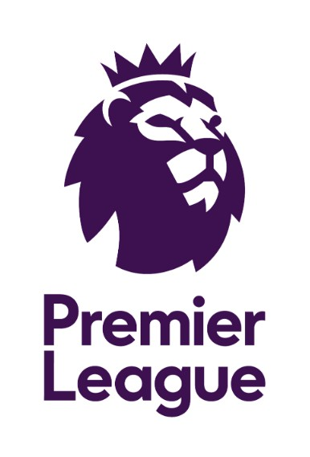
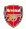
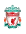
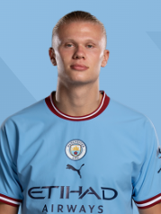
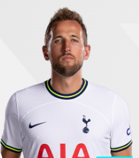
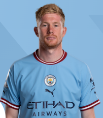

English Premier League
경기 일정
경기 결과
구단
선수검색
로그인
팀순위
순위
팀
승점
1.
맨시티
89
2.

아스날
84
3.
맨유
75
4.
뉴캐슬
71
5.

리버풀
67
6.
브라이튼
62
7.
아스톤빌라
61
8.
토트넘
60
9.
브렌트포드
59
10.
풀럼
52
11.
팰리스
45
12.
첼시
44
13.
울버햄튼
41
14.
웨스트햄
40
15.
본머스
39
16.
노팅엄
38
17.
에버턴
36
18.
레스터
34
19.
리즈
31
20.
사우샘프턴
25
프리미어리그 공식SNS
Facebook
Instagram
Youtube
Weekly Match Highlight
득점 TOP3
1.

엘링 홀란드
(맨시티)
36
2.

해리 케인
(토트넘)
30
3.
이반 토니
(브렌트포드)
20
도움 TOP3
1.

케빈 더브라위너
(맨시티)
16
2.
모하메드 살라
(리버풀)
12
3.
레안드로 트로사르
(아스날)
12
손흥민 EPL 통산 100호골 폭발!! 팀은 2대1로 승리
트레블-EPL 득점왕-UCL 골든부트' 홀란, 발롱도르까지 가능하다
[오피셜] 2023-24시즌 EPL 일정 발표
맨시티, 24년 만에 EPL 구단 ‘트레블’

/cloudfront-ap-northeast-1.images.arcpublishing.com/chosun/HNAD7K7YEBN47NCXOP6GEYK2O4.jpg)